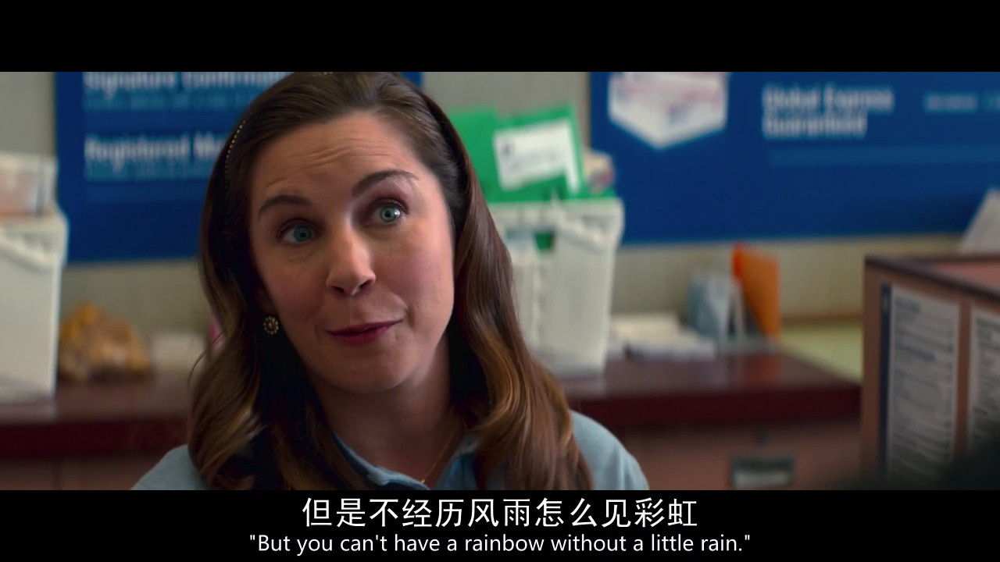

程序员的手感
王福强 - fujohnwang AT gmail DOTA com
今天是1024，所谓的程序员节，恰好又听到一位客户讲了一个他们程序员的故事，所以，扶墙老师今天要谈下程序员的手感问题..
之前在微博上有句话我记得不太清了，大体意思是， 低级一点儿的程序员只管解决问题，但不知道背后的原理； 中级一点儿的程序员会解决问题，但更多会偏向于高深复杂的技术方案； 高级一点儿的程序员则可以根据情况选择合适的技术快速高效的解决问题。 其实这里说的就是程序员的手感， 不同的问题，在不同水平的程序员手里会得到不同的结果。
今天客户谈到的就是他们核心交易系统因为性能太差，经过他们追查发现是数据库表的设计过于遵循数据库设计范式（Normalization），导致应用方处理一个事务要访问数据库70多次，压测的时候把万兆网卡都打满了。这种现象其实说明的是设计系统的程序员在水平和手感把握上的不足，其实遵循范式也好（Normalization），打破范式也罢(De-normalization)， 都不能生搬硬套，要根据具体实践场景来权衡和实施。
我还记得当年去去哪儿（qunar.com）面试的时候， 当对方的技术负责人跟我说他们使用内存来缓存所有飞行航线作为搜索服务的时候，我那时候表现出来的不屑，但实际上，根据他们的场景，这种设计是最简单高效的，因为航线大部分是固定的，那么数据量也是固定的，缓存到内存是最简单高效的方法， 而如果生搬硬套， 引入binlog实时事件最终然后更新搜索引擎索引之类，就过于复杂和流于俗套了。只可惜，当年我还是中级程序员的觉悟。
我想， 一个程序员的成长之路最终都要经历一个“看山是山，看山不是山，看山是山”的阶段吧， 祝所有程序员朋友们节日快乐， 征信跬步，之一不二！

「为AI疯狂」星球上，扶墙老师正在和朋友们讨论有趣的AI话题，你要不要⼀起来呀？^-^
这里
- 不但有及时新鲜的AI资讯和深度探讨
- 还分享AI工具、产品方法和商业机会
- 更有体系化精品付费内容等着你，加入星球(https://t.zsxq.com/0dI3ZA0sL) 即可免费领取。(加入之后一定记得看置顶消息呀！)

存量的时代，省钱就是赚钱。
在增量的时代，省钱其实是亏钱。
避坑儿是省钱的一种形式，更是真正聪明人的选择！
弯路虽然也是路，但还是能少走就少走，背后都是高昂的试错成本。